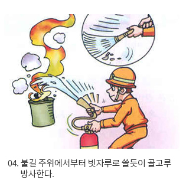

소화기사용법
소화기사용법
소화기사용법을 사전에 충분히 습득해서 재난이 발생하였을 때 피해를 최소화할 수 있도록 대비하시기 바랍니다.
소화기는 이렇게 사용합니다.
- 소화기는 이렇게 설치 및 취급합니다.
- 소화기는 보기 쉽고 사용하기 편리한 곳에 비치합니다.
- 통행에 지장을 주지 않는 곳에 습기나 직사광선을 피하여 비치합니다.
- 이산화탄소소화기는 지하층, 무장층에는 설치하지 말아야 하며, 방사시
노즐 부분 취급에 주의합니다.
- 소화기는 이렇게 사용합니다.
- 작은 화재에만 사용할 것. 여러 개의 소화기를 동시에 사용하면 효과적입니다.
- 방사 개시 후 불에 가까이 접근하여 사용합니다.
- 바람을 등지고 사용할 것. 화재진압에 실패했을 때 피난이 쉽도록 출입구를 등지고 사용합니다.
- 당황하지 말고 침착하게 손잡이를 잡고 불쪽으로 접근합니다.
- 손잡이를 앞쪽에 있는 안전핀을 힘껏 뽑습니다.
- 바람을 등지고 화정을 향하여 호스를 빼들고 손잡이를 움켜쥡니다.
- 불길 주위에서부터 빗자루로 쓸듯이 골고루 방사합니다.

※ 이미지 출처 : 국민재난안전포털 자료실
설치대상 및 설치기준
- 설치대상
- 수동식소화기를 설치해야할 특정소방대상물
- 연면적이 33 ㎡이상일 것
- 연면적이 33 ㎡이상에 해당하지 않는 시설로서 지정문화재 및 가스시설
- 터널
- 자동식소화기를 설치해야 하는 것
- 아파트
- 설치기준
- 소화기구는 방호대상물에서 발생하는 화재를 유효하게 진압할 수 있는 적응 소화기와 충분한 능력단위를 소화기구의화재안전기준
(KFSC101)에서 정하는 기준에 따라 설치하여야 합니다.
 우리들의 짱가 소방관이 알려주는 소화기 사용 노하우
우리들의 짱가 소방관이 알려주는 소화기 사용 노하우 심폐소생술
심폐소생술
 화상응급처치
화상응급처치
 벌쏘임 예방
벌쏘임 예방